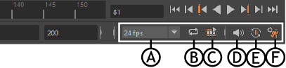
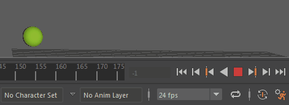
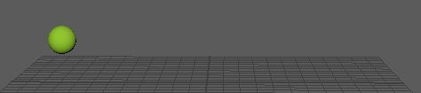
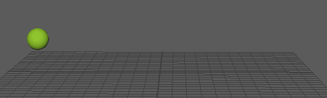
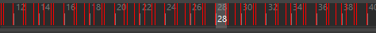

通过范围滑块旁边的播放选项，可以更改有关动画播放的设置，例如帧速率、循环和自动关键帧。

A.“帧速率”(Framerate)菜单 B. 循环(Loop) C. 缓存播放(Cached Playback) D. 音量(Volume) E. 自动关键帧(Auto Key) F. 动画首选项(Animation Preferences)
- 帧速率(Framerate)
- 通过“帧速率”(Framerate)菜单可以设置场景的帧速率，以每秒帧数 (fps) 表示。它显示当前帧速率。
注： 设置帧速率之后，Maya 中所有位置出现的该帧速率均会发生变化，无论是在“文件打开”(File Open)选项、“首选项”(Preferences)窗口中，还是在“时间滑块”(Time Slider)中均是如此。保存文件时，帧速率将一起保存。
-

- 如果更改“帧速率”(Framerate)，它将在动画完成了一个循环或重新启动它后更新。
- 循环(Loop)
- 单击此图标可循环切换 3 个动画播放状态：
-
- 连续循环(Continuous Loop)
-

- 播放时重复播放范围。
- 播放一次(Play once)
-

- 对播放范围播放一次。
- 往返循环(Oscillating Loop)
- 向前和向后循环播放范围。
提示： 您可以通过使用“时间滑块”(Time Slider)首选项中的“设置帧和关键帧步长时循环播放范围”(Loop Play range when stepping frames and keys)选项来设置循环，以循环播放范围或整个动画。 -
缓存播放(Cached Playback)

-

- 单击此图标可打开/关闭“缓存播放”(Cached Playback)。
- “缓存播放”(Cached Playback)仅重新计算已在后台更改的场景部分，使您可以实时预览和处理动画。有关详细信息，请参见使用“缓存播放”(Cached Playback)以提高播放速度。
- 在“缓存播放”(Cached Playback)
图标上单击鼠标右键以显示用于切换缓存模式的选项，清除缓存，打开动画(Animation)或时间滑块(Time Slider)设置首选项，您可在其中设置缓存填充的方向或在时间滑块(Time Slider)上配置“缓存播放”(Cached Playback)状态行的外观，或者打开颜色设置(Color Settings)的“缓存播放”(Cached Playback)部分。
-
当“缓存播放”(Cached Playback)遇到一个不受支持的节点时，它将进入安全模式。“缓存播放”(Cached Playback)处于安全模式时，“缓存播放”(Cached Playback)状态行将变为黄色，并且“缓存播放”(Cached Playback) 图标上会出现警告符号。出现此情况时，请参见脚本编辑器(Script Editor)以了解进入安全模式的原因。有关当前不受支持的节点列表，请参见“缓存播放”(Cached Playback)不支持的节点。
- 体积

- 单击“音量”(Volume)图标可显示滑块，可以在其中调整当前场景的声音级别。
- 双击此图标可禁用声音。图标将更改为
 以指示声音已禁用。
以指示声音已禁用。
- 在图标上单击鼠标右键以访问“音频”(Audio)菜单，此菜单可用于在场景中导入或删除音频，以及选择音频波形在“时间滑块”(Time Slider)上的显示方式。
- 自动关键帧(Auto Key)
- 可以使用此图标启用“自动关键帧”(Auto Key)模式。使用“自动关键帧”(Auto Key)后，当您更改当前时间和属性值时，系统自动在属性上设置关键帧。有关详细信息，请参见使用自动关键帧。
- “时间滑块”(Time Slider)首选项
- 此图标是“时间滑块”(Time Slider)首选项的快捷方式，通过它可以设置您想要的关键帧标记样式，以及要显示在时间滑块(Time Slider)上的时间。